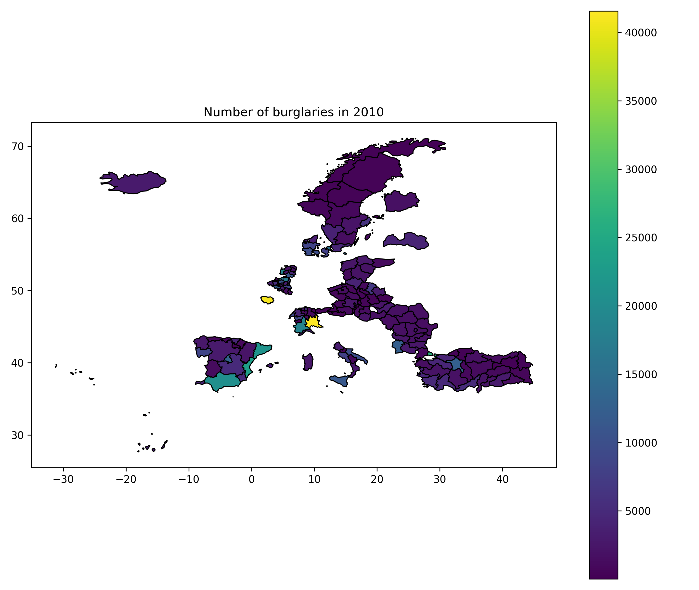
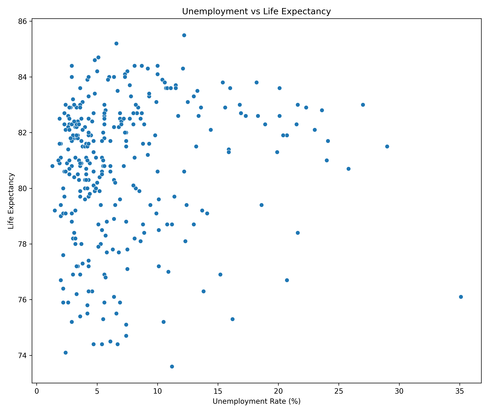
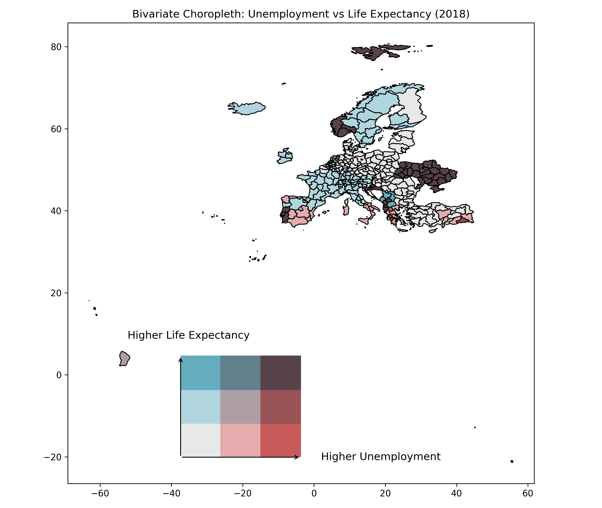

import mapineqpy as mi
available_data = mi.sources(level="3")
print(available_data.head())mapineqpy

The goal of mapineqpy is to access the data from the Mapineq.org API and dashboard (product of the Mapineq project). For R package, see https://github.com/e-kotov/mapineqr and https://www.ekotov.pro/mapineqr.
Installation
Install the development version of mapineqpy from GitHub:
pip install git+https://github.com/e-kotov/mapineqpy.gitBasic Example - Univariate Data and Maps
- Get the full list of available data at NUTS 3 level:
source_name short_description description
0 DEMO_R_D3AREA Area of regions Area by NUTS 3 region (ESTAT)
1 PROJ_19RAASFR3 Fertility assumption Assumptions for fertility rates by age, type o...
2 PROJ_19RAASMR3 Death assumptions Assumptions for probability of dying by age, s...
3 BD_HGNACE2_R3 Business demography Business demography and high growth enterprise...
4 BD_SIZE_R3 Business demography Business demography by size class and NUTS 3 r...- Select data source by
source_namecolumn and check its year and NUTS level coverage:
coverage = mi.source_coverage("CRIM_GEN_REG")
print(coverage)nuts_level year source_name short_description description
0 0 2008 CRIM_GEN_REG Settlement type Satellite-based settlement types based on imagery
1 0 2009 CRIM_GEN_REG Settlement type Satellite-based settlement types based on imagery
2 0 2010 CRIM_GEN_REG Settlement type Satellite-based settlement types based on imagery
3 1 2008 CRIM_GEN_REG Settlement type Satellite-based settlement types based on imagery
4 1 2009 CRIM_GEN_REG Settlement type Satellite-based settlement types based on imagery
5 1 2010 CRIM_GEN_REG Settlement type Satellite-based settlement types based on imagery
6 2 2008 CRIM_GEN_REG Settlement type Satellite-based settlement types based on imagery
7 2 2009 CRIM_GEN_REG Settlement type Satellite-based settlement types based on imagery
8 2 2010 CRIM_GEN_REG Settlement type Satellite-based settlement types based on imagery
9 3 2008 CRIM_GEN_REG Settlement type Satellite-based settlement types based on imagery
10 3 2009 CRIM_GEN_REG Settlement type Satellite-based settlement types based on imagery
11 3 2010 CRIM_GEN_REG Settlement type Satellite-based settlement types based on imagery- Check the available filters for the data source:
filters = mi.source_filters("CRIM_GEN_REG", year=2010, level="2")
print(filters) field field_label label value
0 unit Unit of measure Number NR
1 freq Time frequency Annual A
2 iccs International classification of crime for stat... Intentional homicide ICCS0101
3 iccs International classification of crime for stat... Robbery ICCS0401
4 iccs International classification of crime for stat... Burglary of private residential premises ICCS05012
5 iccs International classification of crime for stat... Theft of a motorized land vehicle ICCS050211- Choose the indicator to filter (let it be burglaries) and get the data:
data = mi.data(
x_source="CRIM_GEN_REG",
year=2010,
level="2",
x_filters={"iccs": "ICCS05012"}
)
print(data.head()) geo geo_name best_year x
0 AT11 Burgenland (A) 2008 223.0
1 AT12 Niederösterreich 2008 2557.0
2 AT13 Wien 2008 9319.0
3 AT21 Kärnten 2008 507.0
4 AT22 Steiermark 2008 1163.0- Map the indicator using NUTS2 polygons:
5.1 Get the NUTS2 level data:
from gisco_geodata import (
NUTS,
set_httpx_args
)
from eurostat import (
get_data_df,
get_toc_df,
set_requests_args
)
import geopandas as gpd
import matplotlib.pyplot as plt
import nest_asyncio
nest_asyncio.apply()
# TLS certificate verification is enabled by default for both httpx and requests.
# If you encounter certificate issues, prefer configuring a proper CA bundle
# instead of disabling verification.
# set_httpx_args(verify=False)
# set_requests_args(verify=False)
nuts = NUTS()
nuts2 = nuts.get(spatial_type='RG', nuts_level='LEVL_2')5.2 Join the data with NUTS2 polygons and plot a map:
import matplotlib.pyplot as plt
# Join the data with NUTS2 polygons
nuts2 = nuts2.merge(data, left_on="NUTS_ID", right_on="geo", how="left")
# Plot a map of burglaries
fig, ax = plt.subplots(1, 1, figsize=(10, 8))
nuts2.plot(column="x", ax=ax, legend=True, cmap="viridis", edgecolor="black")
plt.title("Number of burglaries in 2010")
plt.savefig("figures/map_burglaries.png", dpi=300)
Advanced Example - Bivariate Data and Maps
- Get the data for two indicators (e.g., unemployment rate and life expectancy):
xy_data = mi.data(
year=2018,
level="2",
x_source="TGS00010",
x_filters={"isced11": "TOTAL", "unit": "PC", "age": "Y_GE15", "sex": "T", "freq": "A"},
y_source="DEMO_R_MLIFEXP",
y_filters={"unit": "YR", "age": "Y_LT1", "sex": "T", "freq": "A"}
)
print(xy_data.head()) geo geo_name best_year x y
0 AL01 Veri 2018 NaN NaN
1 AL02 Qender 2018 NaN NaN
2 AL03 Jug 2018 NaN NaN
3 AT11 Burgenland 2018 4.2 81.5
4 AT12 Niederösterreich 2018 3.8 81.5- Plot a scatterplot:
import seaborn as sns
import matplotlib.pyplot as plt
# Start a new figure
plt.figure()
# Create the scatterplot
sns.scatterplot(data=xy_data, x="x", y="y")
# Add labels and title
plt.xlabel("Unemployment Rate (%)")
plt.ylabel("Life Expectancy")
plt.title("Unemployment vs Life Expectancy")
# Save the plot
plt.savefig("figures/edu_vs_life_exp_plot.png", dpi=300)
- Add the bivariate data to the NUTS2 polygons and create a map:
nuts2 = nuts.get(spatial_type='RG', nuts_level='LEVL_2')
nuts2 = nuts2.merge(xy_data, left_on="NUTS_ID", right_on="geo", how="left")Thanks to https://github.com/mikhailsirenko/bivariate-choropleth for the code for bivariate map.
from mapclassify import Quantiles
from sklearn.preprocessing import MinMaxScaler
import numpy as np
from matplotlib.colors import ListedColormap
# Initialize MinMaxScaler
scaler = MinMaxScaler()
# Scale the `x` and `y` variables
nuts2['x_scaled'] = scaler.fit_transform(nuts2[['x']])
nuts2['y_scaled'] = scaler.fit_transform(nuts2[['y']])import matplotlib.pyplot as plt
import matplotlib.colors as mcolors
import pandas as pd
# Define the bivariate colormap
all_colors = [
"#e8e8e8", "#b0d5df", "#64acbe", # Low Y (1st row)
"#e4acac", "#ad9ea5", "#627f8c", # Mid Y (2nd row)
"#c85a5a", "#985356", "#574249", # High Y (3rd row)
]
cmap = mcolors.ListedColormap(all_colors)
# Binning variables for bivariate classification
bins = [0, 0.33, 0.66, 1]
nuts2['Var1_Class'] = pd.cut(nuts2['x_scaled'], bins=bins, labels=["1", "2", "3"], include_lowest=True)
nuts2['Var2_Class'] = pd.cut(nuts2['y_scaled'], bins=bins, labels=["A", "B", "C"], include_lowest=True)
nuts2['Bi_Class'] = nuts2['Var1_Class'].astype(str) + nuts2['Var2_Class'].astype(str)
# Filter the colormap to match present classes
present_classes = nuts2['Bi_Class'].unique()
filtered_colors = [
color for cls, color in zip(
['1A', '1B', '1C', '2A', '2B', '2C', '3A', '3B', '3C'], all_colors
) if cls in present_classes
]
filtered_cmap = mcolors.ListedColormap(filtered_colors)
# Plot the bivariate map
fig, ax = plt.subplots(1, 1, figsize=(10, 8))
nuts2.plot(column="Bi_Class", ax=ax, cmap=filtered_cmap, edgecolor="black", legend=False)
plt.title("Bivariate Choropleth: Unemployment vs Life Expectancy (2018)")
# Add the bivariate legend
legend_ax = fig.add_axes([0.3, 0.1, 0.2, 0.2]) # Position and size of the legend
legend_ax.set_xlim(0, 3)
legend_ax.set_ylim(0, 3)
# Draw legend squares
for i in range(3):
for j in range(3):
legend_ax.add_patch(plt.Rectangle((i, j), 1, 1, color=all_colors[i * 3 + j]))
# Add arrows for axes
legend_ax.annotate("", xy=(3, 0), xytext=(0, 0), arrowprops=dict(arrowstyle="->", lw=1))
legend_ax.annotate("", xy=(0, 3), xytext=(0, 0), arrowprops=dict(arrowstyle="->", lw=1))
# Add axis labels
legend_ax.text(3.5, 0, "Higher Unemployment", va="center", fontsize=12)
legend_ax.text(.2, 3.5, "Higher Life Expectancy", ha="center", fontsize=12, rotation=0)
legend_ax.axis("off") # Turn off the axis for a clean legend
# Save the map
# plt.savefig("bivariate_choropleth_with_legend.png", dpi=300)
plt.savefig("figures/edu_vs_life_exp_map.png", dpi=300)
Citation
To cite mapineqpy and the data/API, please use:
Kotov E. “mapineqpy: A Python package for accessing Mapineq API data.” 2024. Available at: https://github.com/e-kotov/mapineqpy
Mills M, Leasure D (2024). “Mapineq Link: Geospatial Dashboard and Database.” doi:10.5281/zenodo.13864000 https://doi.org/10.5281/zenodo.13864000.